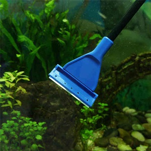

Čištění skel
Jak na to?
- Škrabky na sklo
- Magnetická stěrka
- Cena: 50 - 600 Kč
- Je nutné čisit skla? ano
Čištění skel akvária je důležité nejen pro estetiku, ale také pro zdraví ryb a
celého akvarijního prostředí. Na skle se totiž často usazují řasy, vodní kámen nebo jiné nečistoty.
Magnetické čističe: Skládají se ze dvou částí – jedna část je uvnitř akvária (s čisticím povrchem a magnetem), druhá zvenčí (s magnetem). Při pohybu vnější části po skle se vnitřní část pohybuje současně a čistí sklo.
Manuální nástroje s ostrým nebo houbičkovým koncem určené k odstraňování řas. Škrabky mohou mít buď plastovou, nebo kovovou čepel. Jsou účinější vůči řasám než magnetické čističe.